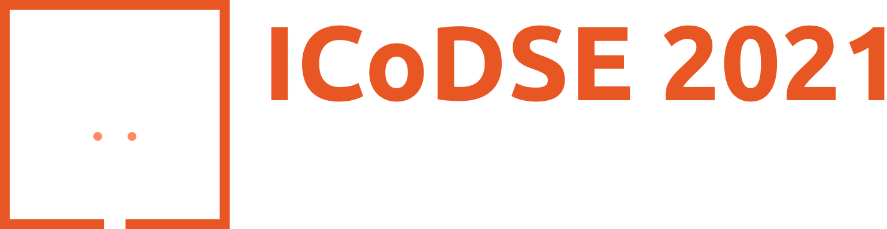

Menu
Keynote
Committee
Important Dates
Call for Papers
Instruction for Authors
Registration
Organizers
Pitching Competition!
Free Webinar!
Collection of all tags
(0)
Featured
Important Dates
Organizers
Pre-event: DSE Day